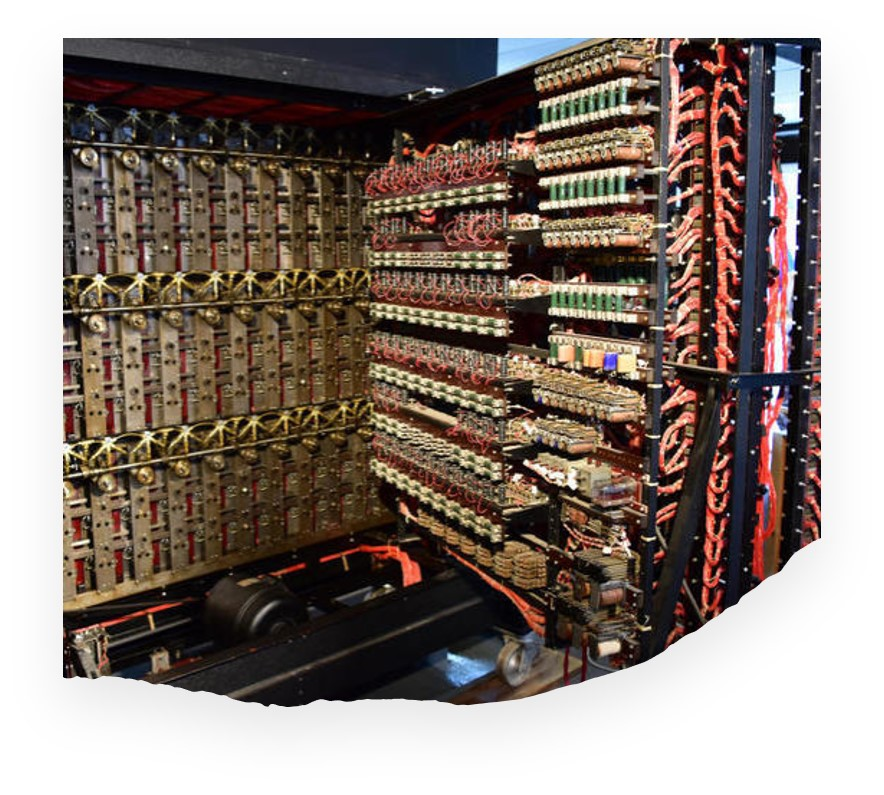

Il primo computer elettronico e programmabile si chiamava Colossus. Fu inventato dagli inglesi durante la Seconda guerra Mondiale e fu in grado di decifrare i codici sviluppati dalla cifratrice ‘’Lorenz SZ 40/42’’ usata dai nazisti per proteggere la corrispondenza fra Adolf Hitler e i suoi capi di stato. Il suo aiuto fu indispensabile per far vincere la guerra agli Alleati. Il conflitto ebbe inizio il 1º settembre del 1939 con l'attacco della Germania nazista alla Polonia ed ebbe fine il 2 settembre 1945 con la resa tedesca. Al termine del conflitto, l’Europa perse la sua centralità sul mondo. Gli USA e l’URSS diventeranno le due nuove superpotenze che si scontreranno in un conflitto ideologico, non armato, chiamato Guerra Fredda.
